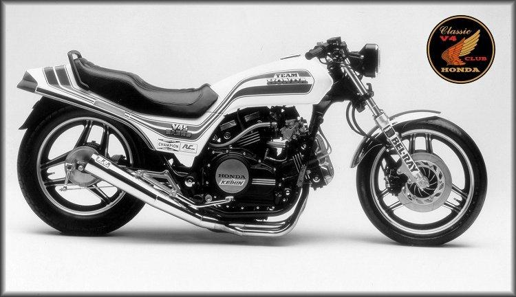

Dave Dodge
Dave Dodge has been working on Honda V4s since their inception. He was working for RC Engineering when Honda contracted them to create an '82 V4 Sabre drag bike. The RC Magna test bike with a Stage 2 cam grind, a header, RC clutch, and K&N filter would run high 10s all day.
 |
V45 Sabre Drag Bike |
Dodge has vast experience with Honda V4 motorcycles, especially as drag bikes. His business is centered around Honda V4s and he often offers free advice and information on the SabMag list. However, while his opinions are well-informed, they are still his opinions. Dodge is a friendly, knowledgeable, experienced and skilled mechanic, but he is not Moses bringing down pronouncements from Mt. Honda.
According to Dodge himself:
"Dodge Racing Products(DRP) specializes in Honda V-4 performance products and services for year models 1982 to Present (excluding VF500). We make top-end oil mod kits (2 styles), cams, valve springs, titanium retainers, custom valves, pistons, connecting rods, Kevlar clutch kits, braided s.s. clutch and brake hose kits. We also stock a complete line of K&N filters, Accel coils, Dyna ignitions, Keihin jets and carb parts, and OEM Honda engine parts, all at discount prices.
We offer top case boring and honing, transmission undercutting, head porting, competition valve jobs, crank work, and complete engine building and rebuilding."
Contact Info:
Dodge Racing Products
attn: Dave Dodge
2595 Davida Ave.
Fort Mohave, AZ 86426
Tel: (704) 526-6402 (please leave a message, so I can call you back on a land line)
E-Mail: drp123@mindspring.com
Web Site: http://www.drp123.com (always under construction)
 BR
BR